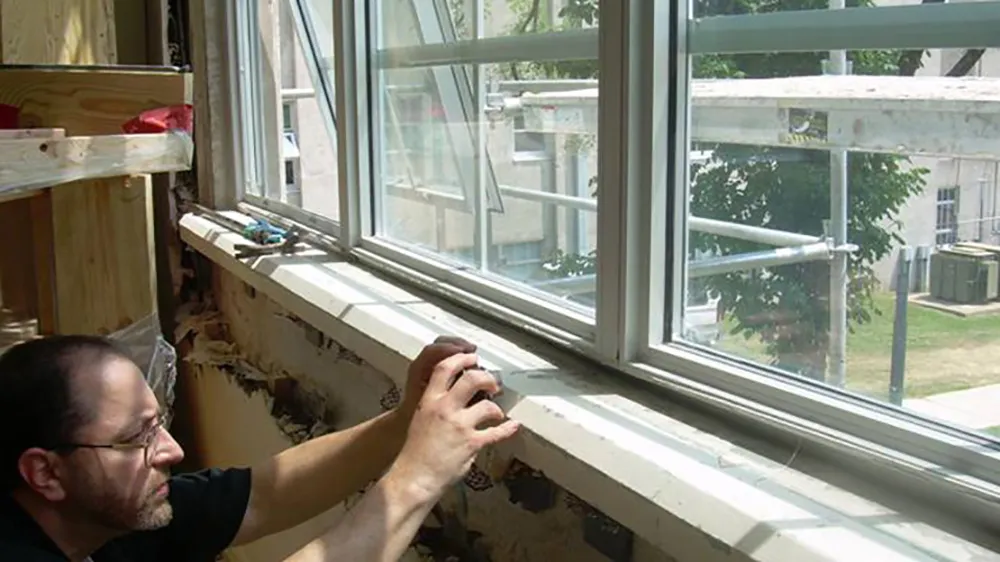
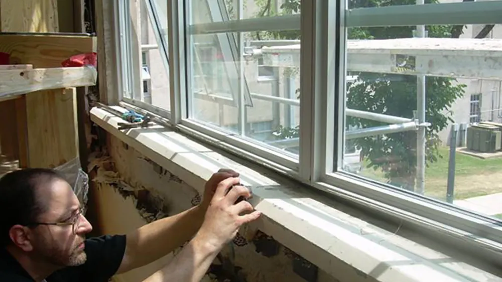
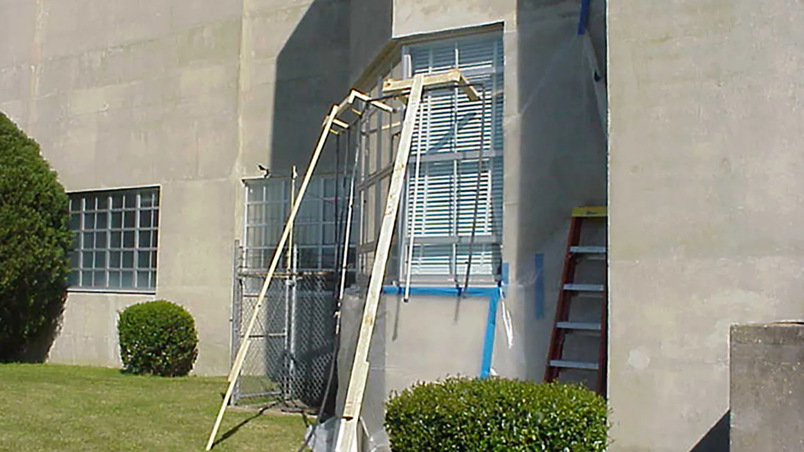
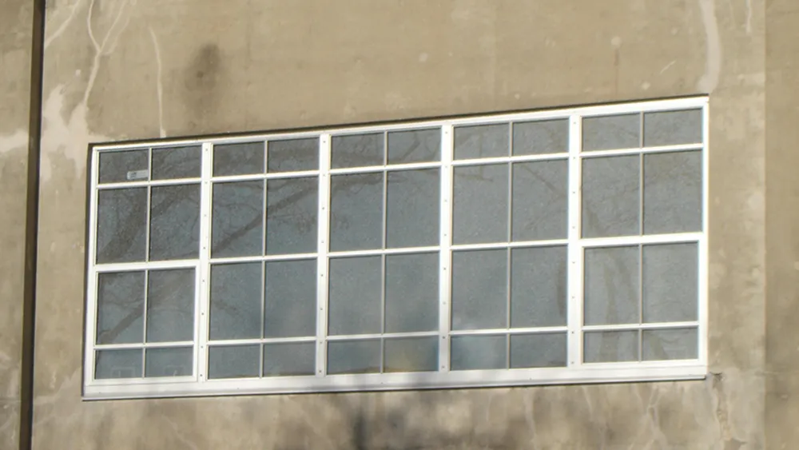
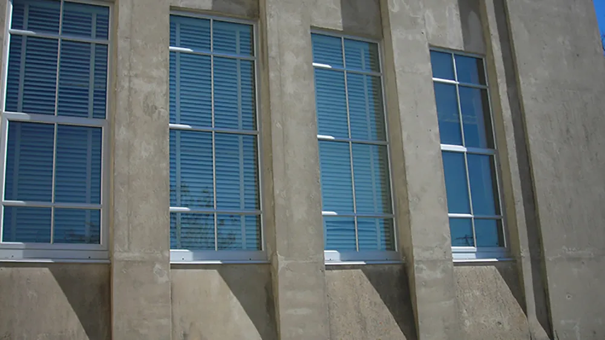
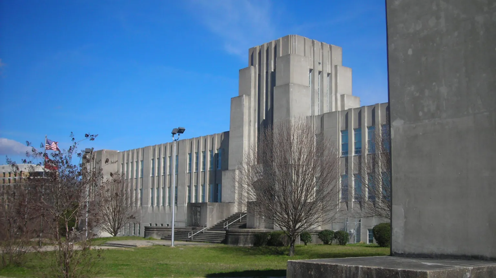
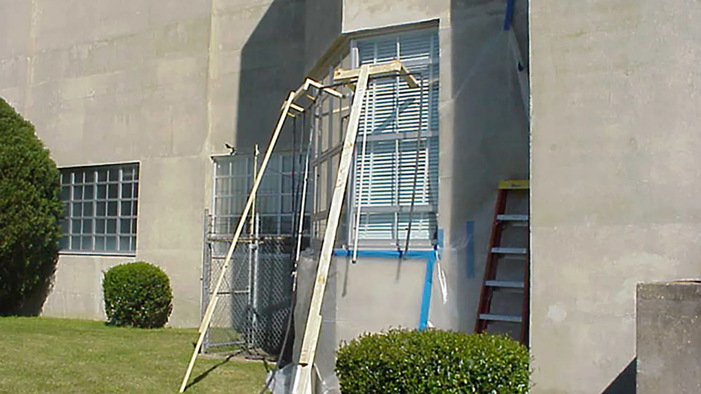
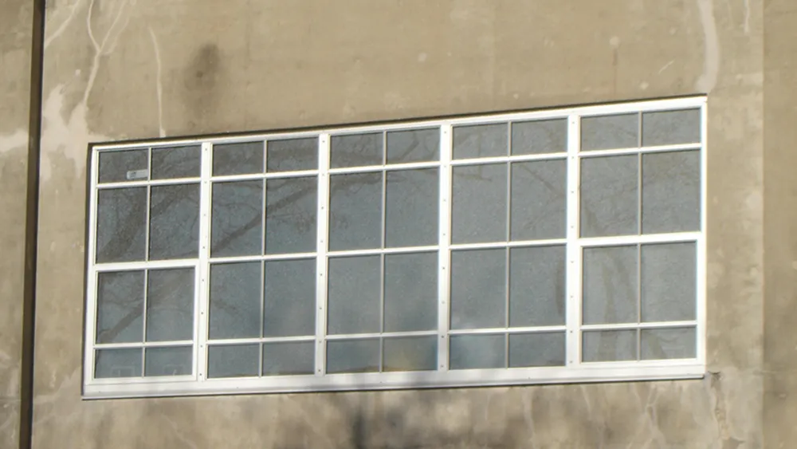
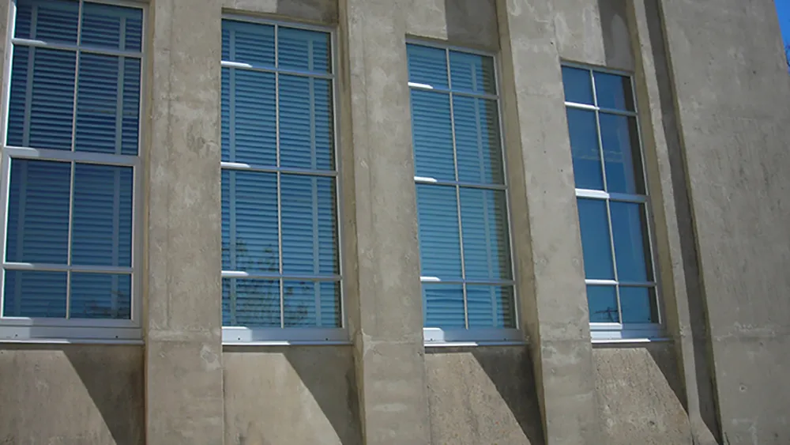
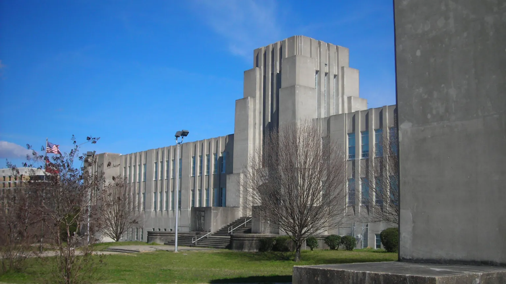

Bailey School Restoration
The Bailey School Restoration, focused on an architectural landmark known for its monolithic, poured-in-place concrete exterior skin and listed on the National Register for Historic Places, received international acclaim when completed in 1937. Recently it has suffered deterioration from water infiltration, originating from a faulty window system, wall leakage and roof leakage. Several attempts to remedy the problems have failed. Burris/Wagnon Architects, P.A., along with building forensics consultant Wiss, Janney, Elstner Associates, was commissioned to analyze thoroughly the building’s envelope, and design, specify, and implement a complete envelope repair project before subsequently bidding a comprehensive interior finish repair project that will include restoration of all water-damaged finishes and structure.
 

 






